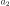
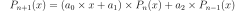
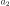
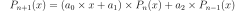

OrthonormalizationAlgorithm¶
- class OrthonormalizationAlgorithm(*args)¶
Algorithm used to build the orthonormal basis.
With respect to a specific distribution.
- Available constructors:
OrthonormalizationAlgorithm(orthoAlgoImp)
OrthonormalizationAlgorithm(measure)
- Parameters
- orthoAlgoImpOrthonormalizationAlgorithmImplementation
An orthonormalization algorithm implementation.
- measure
Distribution A distribution for which the orthonormal polynomial basis is built.
See also
Notes
It enables to build the orthonormal polynomial basis with respect to the given distribution.
In the first usage, the algorithm orthoAlgoImp is used (that specifies the associated distribution). In the second usage, the Gram-Schmidt algorithm is used by default. Only the distribution measure is specified.
Methods
Accessor to the object's name.
getId()Accessor to the object's id.
Accessor to the underlying implementation.
Accessor to the measure.
getName()Accessor to the object's name.
Accessor to the recurrence coefficients.
setMeasure(measure)Accessor to the measure.
setName(name)Accessor to the object's name.
- __init__(*args)¶
- getClassName()¶
Accessor to the object’s name.
- Returns
- class_namestr
The object class name (object.__class__.__name__).
- getId()¶
Accessor to the object’s id.
- Returns
- idint
Internal unique identifier.
- getImplementation()¶
Accessor to the underlying implementation.
- Returns
- implImplementation
The implementation class.
- getMeasure()¶
Accessor to the measure.
- Returns
- m
Distribution The measure for which the orthonormal polynomial basis is built.
- m
- getName()¶
Accessor to the object’s name.
- Returns
- namestr
The name of the object.
- getRecurrenceCoefficients(n)¶
Accessor to the recurrence coefficients.
- Parameters
- ninteger
Index ot the recurrence step.
- Returns
- coefsequence of float
Calculate the coefficients of recurrence
 ,
,  , 
such that
.
, 
such that
.
- setMeasure(measure)¶
Accessor to the measure.
- Parameters
- m
Distribution The measure for which the orthonormal polynomial basis is built.
- m
- setName(name)¶
Accessor to the object’s name.
- Parameters
- namestr
The name of the object.